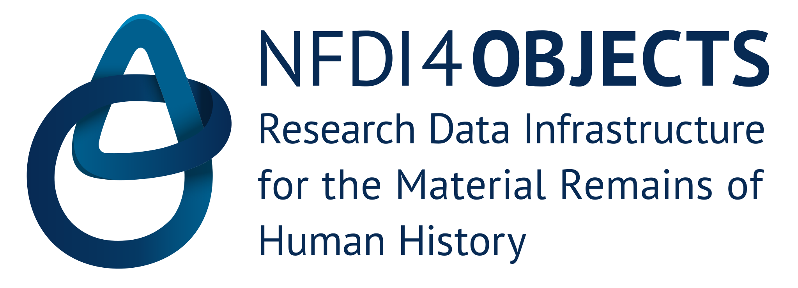
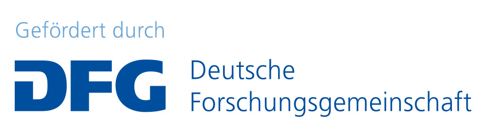

Digitale Numismatik
Einführung in das interaktive Lernmodul
Warum dieser Kurs?
Die Digitalisierung in der numismatischen Welt ist bereits weit fortgeschritten, doch die Verknüpfung heterogener Bestände bleibt eine Herausforderung. Dieser Kurs gibt Ihnen das Handwerkszeug, um in dieser digitalen Landschaft sicher zu navigieren, ohne dass informatische Vorkenntnisse nötig sind.
Aufbau des Kurses
1. Basiswissen digitale Numismatik
Inhalt Forschungsdaten und Portalrecherche
Warum? Datenquellen verstehen
2. Vage Münzdaten
Inhalt Umgang mit unsicheren und vagen Daten
Warum? Auswertungen transparent und reproduzierbar machen
Die Module können in beliebiger Reihenfolge absolviert werden.
Sie können jederzeit zurückspringen, ohne Ihren Fortschritt zu verlieren.
Technische Grundlage des Kurses
Dieser Kurs wurde mit Quarto Live geschrieben, das interaktive Übungen erlaubt.
| Web‑basiert | Der Kurs läuft komplett im Browser (Chrome, Firefox, Edge …). |
| Sicher | Der Code wird in einer isolierten Web‑Assembly‑Umgebung ausgeführt – keine Daten verlassen Ihren Rechner. |
| Interaktiv | Sie können Code‑Zellen anpassen und sofort das Ergebnis sehen. |
Mehr erfahren: https://quarto.org/docs/computations/quarto-live.html
Die interaktiven Elemente des Kurses nutzen die Programmiersprache Python. Wenn Sie mit eigenen numismatischen Daten arbeiten möchten, ist Python ein guter Einstiegspunkt. Keine Angst, die Codezeilen sind sehr kurz und ausführlich erklärt, sodass Sie sich auch ohne Informatikkentnisse gut orientieren können. Python ist eine sprechende Programmiersprache und relativ einfach zu verstehen.
| Einfach zu lesen | Die Syntax ist fast wie ein Satz in natürlicher Sprache. |
| Große Community | Viele Beispiele und Tutorials, speziell für die Digital Humanities. |
| Flexibilität | Mit Bibliotheken wie pandas, numpy und matplotlib können Daten einfach verarbeitet und visualisiert werden. |
Einsteiger‑Tutorial: https://www.python.org/about/gettingstarted/
Förderung
Diese ELearning-Materialien wurden am Zentrum für Antike Numismatik am Seminar für Alte Geschichte an der Universität Heidelberg entwickelt.
Finanziert wurde das Projekt in dem von der DFG geförderten Projekt NFDI4Objects - Forschungsdateninfrastruktur für die materiellen Hinterlassenschaften der Menschheitsgeschichte.

